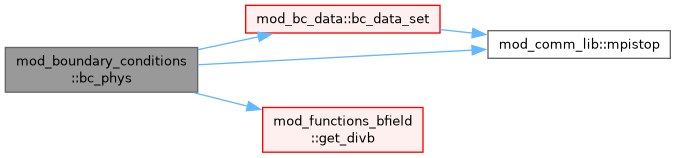

mod_boundary_conditions Module Reference
Functions/Subroutines | |
| subroutine, public | bc_phys (iside, idims, time, qdt, s, ixgl, ixbl) |
| fill ghost cells at a physical boundary | |
| subroutine, public | getintbc (time, qdt, ixgl) |
| fill inner boundary values | |
Function/Subroutine Documentation
◆ bc_phys()
| subroutine, public mod_boundary_conditions::bc_phys | ( | integer, intent(in) | iside, |
| integer, intent(in) | idims, | ||
| double precision, intent(in) | time, | ||
| double precision, intent(in) | qdt, | ||
| type(state), intent(inout) | s, | ||
| integer, intent(in) | ixg, | ||
| integer, intent(in) | l, | ||
| integer, intent(in) | ixb, | ||
| l ) |
fill ghost cells at a physical boundary
Definition at line 12 of file mod_boundary_conditions.t.
Here is the call graph for this function:

◆ getintbc()
| subroutine, public mod_boundary_conditions::getintbc | ( | double precision, intent(in) | time, |
| double precision, intent(in) | qdt, | ||
| integer, intent(in) | ixg, | ||
| integer, intent(in) | l ) |
fill inner boundary values
Definition at line 268 of file mod_boundary_conditions.t.
Generated by